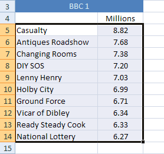

Free
computer Tutorials
|
Free
computer Tutorials
|
|
 HOME HOME
|
|
||||
Microsoft Excel 2007 to 2010Create an Excel ChartWe’re now going to create a chart from our BBC1 Viewing figures. If you haven't yet completed the sorting tutorial, go back one page and follow along with the lesson. You'll then have a some sorted viewing figures to create a chart from. When our chart is finished, though, it will look like this: A little later, you'll see how to improve on this basic chart.
To start making your chart, highlight the BBC1 programmes, and the viewing figures. If you have just finished the sorting section, this data should still be highlighted, and look like this:  With your programmes and the viewing figures highlighted, do this:
For this first one, we'll create a Column Chart. So click the down arrow on the Column item of the Chart Panel. You'll see a list of available charts to choose from. Select the first one, the chart highlighted below (2D Column): When you make your selection, a new chart appears on the same spreadsheet that you have open. The chart should look the same as the one at the top if this page. But notice that the Excel Ribbon has changed. The design menu is selected, along with options for Chart Layouts:
And also options for Chart styles:
You'll see how to use these later. For now, your chart may be covering your viewing figures. In the next part, we'll see how to move and resize a chart.
|
|||||
|